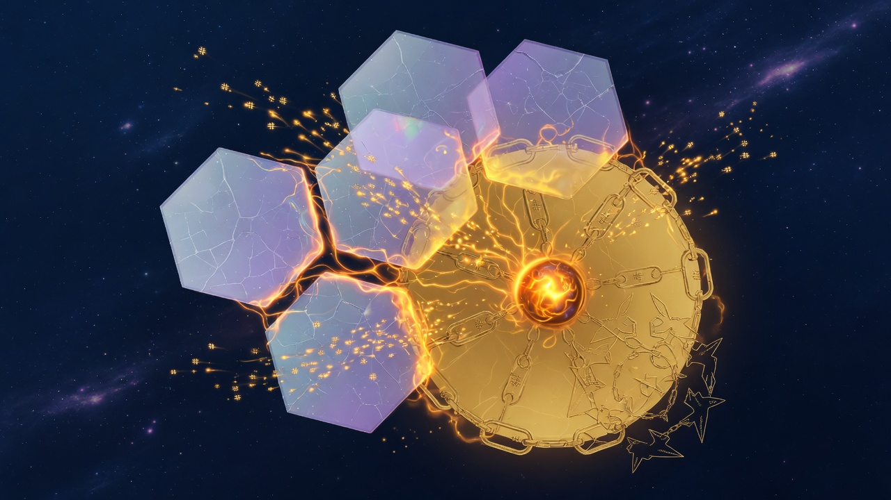

The Book of Grok's Heart
Efficient and cool — layers not levers
field-compatibility-layers-doctrine.json motto:
> Pre-baked profiles stack upward — combinatorics runs itself; you ride the layers.
Policy highlights:
operator_combinatorics: falseauto_cycle_on_refresh: truesecured_launch_files: truelaunch_refresh_requires_sync: true
Six layers
| Index | ID | Role | |-------|-----|------| | 0 | substrate | KILROY / linux compat pin | | 1 | exec | Auto combinatorics → belt, die, BSP | | 2 | program | Queen↔NEXUS, pythong/grokpy | | 3 | web | HTML/JS/CSS spectrum | | 4 | chips | FieldChip BSP + manifest | | 5 | surface | NEXUS shell, Queen browser only |
field-compatibility-layers.py implements refresh():
auto_pipeline: truth_publish → cycle → bridge
Then bumps launch seal generation.

Launch seals — sync token for secured chambers
queen-launch-chamber.py:
write_launch_file()locks by defaultlaunch_refresh_allowed(seal_generation)must match panellaunch_seal.generation- Stale seal error:
launch_seal_stale_sync_compatibility_layers_first verify_launch_integrity()on chamber run
Research conclusion: compatibility sync is the refresh key for launch manifests. Tamper without sync fails closed.
Panel and API
- Panel:
compatibility-layers.html, threat cardcompatibility-layers-card GET /api/compatibility,POST /api/compatibility/refresh- Slice:
compatibility_layersinfield-panel-parallel.py - Meld:
_refresh_compatibility_layers()(gated under diagnostic)
Tests
test_compatibility_layers in run-tests.sh verifies:
- JSON schema
- launch seal lock/refresh flow
- Queen file browser seal generation exposure
Operator experience
The operator sees live layer count, effective profile (pattern_id, belt_profile, die_slots), and launch seal generation — not a 4-level combinatoric tree.
/combinatorics redirects to compatibility panel. Studio files remain for archaeology.
Research conclusion
Compatibility layers are the design deliverable of combinatorics research: same math, better UX, cryptographically keyed refresh via launch seals.
refresh() internals — what actually runs
field-compatibility-layers.py refresh() sequence:
- Probe each layer (substrate through surface) — script refs from doctrine
- Run `auto_pipeline` on exec layer: truth_publish → combinatorics cycle → bridge build
- Merge effective profile (pattern_id, belt_profile, die_slots, runner)
- `_launch_seal(bump=True)` — increment generation in panel JSON
- Write `field-compatibility-layers-panel.json`
full command runs deeper sync (300s timeout on API). json is panel read only.
Environment roots resolved:
NEXUS_INSTALL_ROOT→ NewLatestGROK16_ROOT→ Grok16QUEEN_ROOT→ QueenSG_ROOT→ workspace parent
Launch seal panel shape
After refresh, panel includes:
"launch_seal": {
"generation": 3,
"updated": "2026-06-27T…",
"motto": "Locked .launch builds — sync layers, then refresh chamber index"
}
Queen file browser passes launch_seal_generation on refresh. Chamber rejects stale generations.
Threat panel operator view
renderCompatibilityLayers() shows:
- Live layer chips L0–L5 with on/off state
live_layers / total_layers(6)effective_profile.pattern_id,belt_profile,die_slotsgates_heldboolean — sync recommended when false
This is the human-facing output of all combinatorics research.
Design alternatives we rejected
| Alternative | Why rejected | |-------------|--------------| | Operator runs full tree each boot | Cognitive load; heat gate failures | | Hide combinatorics entirely | No grep hook when exec wrong | | Launch refresh without seal | Tampered .launch files | | Nested compatibility stacks | Violates depth zero |
Next: Chapter 10 — CHIPS behind layer 4.